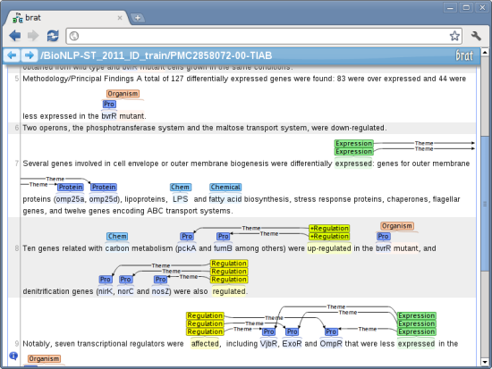

Learn more:
Try brat online
Runs in your browser: no installation required
Intuitive annotation visualization and editing
Create your own local brat installation:
Download brat
Manage your own annotation effort
Easy to set up
brat rapid annotation tool
online environment for collaborative text annotation
")